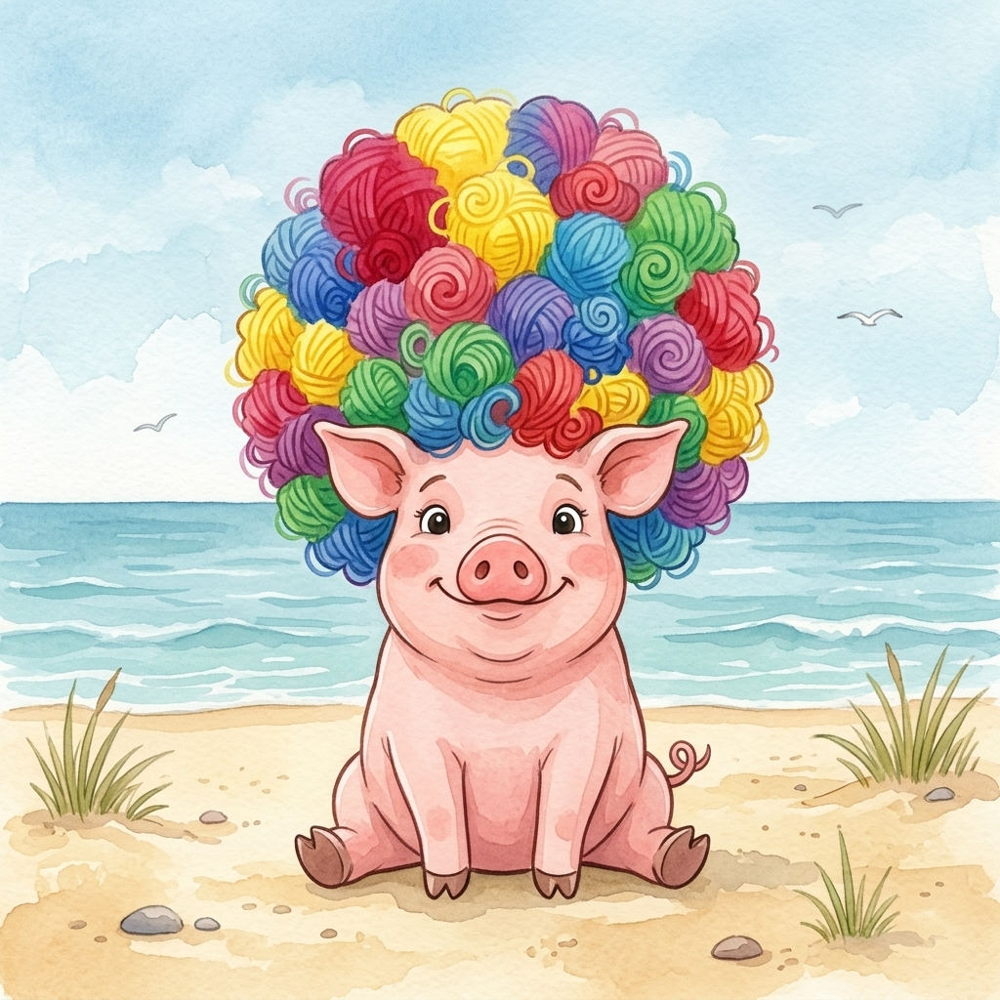

Step 1 · Say the Sound
I
I can say /ĭ/, like pig.
🐷pig
🎭wig
⭐big
Read short-i words. Then read one tiny story.

I can say /ĭ/, like pig.
Pig had a wig.
The wig was big.
Pig sat in the wig.
Pig did a jig.
You read pig, wig, and big.
That’s real reading.
If it still feels fun, read the story one more time.